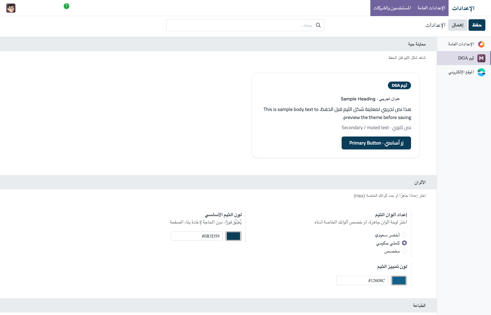
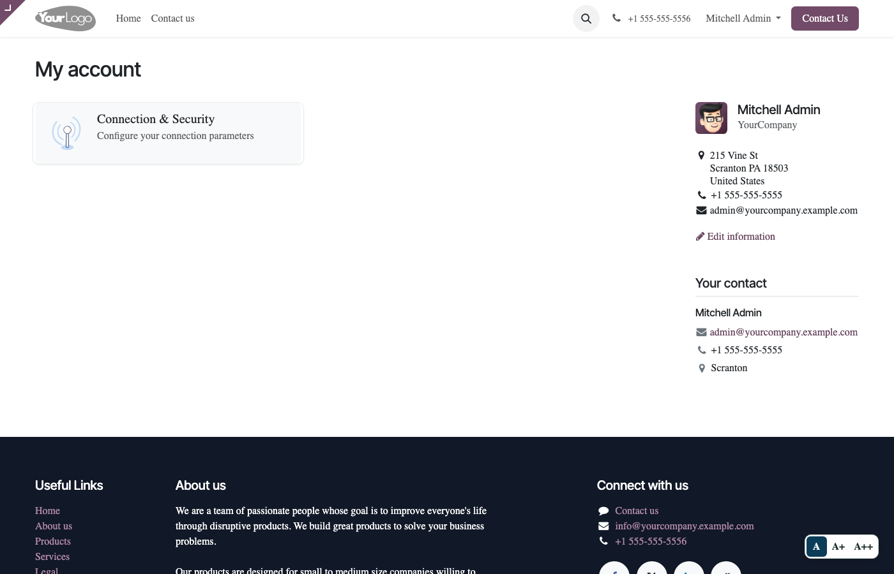

<meta charset="utf-8"/>
<section dir="rtl" style="max-width: 900px; margin: 0 auto; font-family: -apple-system, 'Segoe UI', Tahoma, Arial, sans-serif; color: #333; background: #ffffff; text-align: right;">

    <div style="text-align:center; padding: 32px 0;">
        <h1 style="font-size: 2rem; margin-bottom: 8px; color: #222;">ثيم شامل لتخصيص الهوية البصرية الكاملة لأودو، بدعم عربي RTL أصيل</h1>
        <p style="font-size: 1.15rem; color: #555; direction: rtl;">
            واجهة خلفية بمشغل تطبيقات على شكل بطاقات ديناميكية احترافية، بوابة عملاء وموقع
            إلكتروني بنفس الهوية، ألوان وخطوط قابلة للتخصيص بالكامل من الإعدادات فورًا
            (بدون برمجة أو إعادة بناء)، خطوط عربية أصلية (IBM Plex Sans Arabic)، ودعم
            وصولية WCAG 2.1 AA &mdash; كل هذا داخل أودو مباشرة.
        </p>
        <p style="font-size: 1rem; color: #888; direction: ltr; margin-top: 4px;">
            Chroma Identity Theme &mdash; Full Brand Customization &amp; Arabic RTL for Odoo, backend + portal + website
        </p>
        <div>
            <span style="display:inline-block; background:#f7f5f9; border:1px solid #e5e0e3; border-radius:20px; padding:6px 16px; margin:4px; font-size:14px;">Odoo 18</span>
            <span style="display:inline-block; background:#5E4766; color:#fff; border-radius:20px; padding:6px 18px; margin:4px; font-size:14px; font-weight:700;">€49</span>
            <span style="display:inline-block; background:#f7f5f9; border:1px solid #e5e0e3; border-radius:20px; padding:6px 16px; margin:4px; font-size:14px;">Community &amp; Enterprise</span>
            <span style="display:inline-block; background:#f7f5f9; border:1px solid #e5e0e3; border-radius:20px; padding:6px 16px; margin:4px; font-size:14px;">عربي / English + جميع اللغات</span>
        </div>
    </div>

    <div style="margin-bottom: 32px;">
        
        <p style="text-align:center; color:#888; font-size:0.85rem; margin-top:6px;">مشغل تطبيقات جديد بالكامل &mdash; بطاقات قابلة للبحث بدل القائمة المنسدلة الافتراضية</p>
    </div>

    <div style="background:#f7f5f9; border-radius: 12px; padding: 24px; margin-bottom: 32px;">
        <h2 style="margin-top:0;">لماذا هذا الثيم؟</h2>
        <p>
            واجهة أودو الافتراضية تبدو واحدة لكل شركة تستخدمها - لا هوية بصرية خاصة،
            والدعم العربي غالبًا ترجمة فقط دون خطوط أو تفاصيل تصميم حقيقية. هذا الثيم
            يمنحك تحكمًا كاملاً في الهوية البصرية من الإعدادات مباشرة: الألوان
            الأساسية والثانوية ولون "الإطار" الغامق للواجهة الخلفية، الخطوط العربية
            والإنجليزية، وألوان النصوص - كل هذا يتغير فورًا دون كتابة سطر كود واحد أو
            إعادة بناء. بالإضافة إلى مشغل تطبيقات جديد كليًا يعرض التطبيقات كبطاقات
            بدل قائمة نصية، ورابط "تخطي إلى المحتوى" وأداة تكبير الخط لدعم الوصولية في
            البوابة والموقع.
        </p>
    </div>

    <h2>أبرز المزايا</h2>
    <table style="width:100%; border-collapse: collapse; margin-bottom: 24px;">
        <tr><td style="padding:10px; border-bottom:1px solid #eee; width:220px;"><strong>تخصيص كامل للهوية</strong></td>
            <td style="padding:10px; border-bottom:1px solid #eee;">الألوان الأساسية، الثانوية، ولون إطار الواجهة (الناف بار والسايد بار)، بالإضافة لألوان العناوين والنصوص - كل هذا مستقل وقابل للتغيير من الإعدادات لكل شركة على حدة.</td></tr>
        <tr><td style="padding:10px; border-bottom:1px solid #eee;"><strong>مشغل تطبيقات بالبطاقات</strong></td>
            <td style="padding:10px; border-bottom:1px solid #eee;">يستبدل قائمة التطبيقات النصية بشبكة بطاقات قابلة للبحث ولوحة المفاتيح، تعمل بالكامل على Community دون الحاجة لإنتربرايز، مع سايد بار جانبي اختياري.</td></tr>
        <tr><td style="padding:10px; border-bottom:1px solid #eee;"><strong>خطوط عربية أصلية</strong></td>
            <td style="padding:10px; border-bottom:1px solid #eee;">4 أزواج خطوط عربية/إنجليزية جاهزة (IBM Plex Sans Arabic وغيرها)، مطبّقة حسب اللغة فلا تتأثر بقية اللغات المثبتة.</td></tr>
        <tr><td style="padding:10px; border-bottom:1px solid #eee;"><strong>معاينة حية في الإعدادات</strong></td>
            <td style="padding:10px; border-bottom:1px solid #eee;">شاشة إعدادات كاملة (Settings &gt; Chroma Identity) ببطاقة معاينة حية، وزر لاستخراج الألوان مباشرة من شعار الشركة - كل هذا تحكم فيه قبل الحفظ.</td></tr>
        <tr><td style="padding:10px; border-bottom:1px solid #eee;"><strong>دعم كامل لـ RTL</strong></td>
            <td style="padding:10px; border-bottom:1px solid #eee;">يعتمد على محرك rtlcss المدمج في أودو، فتنعكس كل الشاشات تلقائيًا للعربية دون كسر الإنجليزية أو أي لغة أخرى.</td></tr>
        <tr><td style="padding:10px; border-bottom:1px solid #eee;"><strong>طبقة وصولية (Accessibility)</strong></td>
            <td style="padding:10px; border-bottom:1px solid #eee;">حلقات تركيز واضحة، رابط "تخطي إلى المحتوى"، وأداة تكبير/تصغير الخط في البوابة والموقع.</td></tr>
        <tr><td style="padding:10px;"><strong>بوابة عملاء وموقع بنفس الهوية</strong></td>
            <td style="padding:10px;">صفحات "حسابي" والمستندات والدردشة، وباقة موقع/متجر إلكتروني منفصلة (chroma_identity_theme_website) تُثبَّت تلقائيًا عند وجود الموقع، مع باقة اختيارية بطابع حكومي (هيدر/فوتر/محتوى) لعملاء القطاع العام.</td></tr>
    </table>

    <div style="margin-bottom: 24px;">
        
        <p style="text-align:center; color:#888; font-size:0.85rem; margin-top:6px;">منتقي ألوان من الإعدادات &mdash; يُطبَّق فورًا على الواجهة بأكملها</p>
    </div>

    <div style="margin-bottom: 32px;">
        
        <p style="text-align:center; color:#888; font-size:0.85rem; margin-top:6px;">بوابة العملاء (حسابي) بالعربية RTL بنفس هوية الثيم</p>
    </div>

    <div style="background:#f7f5f9; border-radius: 12px; padding: 24px; margin-bottom: 24px;">
        <h2 style="margin-top:0;">ملاحظة صريحة حول الألوان</h2>
        <p>
            الألوان المعتمدة افتراضيًا هي نقطة بداية احترافية مطابقة لمعايير التباين
            البصري (WCAG AA)، وليست هوية إلزامية لأي جهة - عدّلها بالكامل من الإعدادات
            لتطابق هوية شركتك أو عميلك. لعملاء القطاع الحكومي الراغبين بطابع رسمي
            سعودي، تتوفر باقة اختيارية (هيدر/فوتر) ضمن باقة الموقع الإلكتروني.
        </p>
    </div>

    <h2>خطوات الإعداد</h2>
    <ol>
        <li>ثبّت التطبيق &mdash; يُطبَّق الثيم فورًا على الواجهة الخلفية والبوابة.</li>
        <li>اختر لونًا جاهزًا أو خصص لونك من الإعدادات &gt; Chroma Identity.</li>
        <li>عند تثبيت تطبيق الموقع الإلكتروني، ثبّت الباقة المكمّلة chroma_identity_theme_website لتطبيق نفس الهوية على الموقع والمتجر.</li>
    </ol>

    <div style="text-align:center; padding: 24px 0 8px; border-top: 1px solid #eee; margin-top: 8px;" dir="ltr">
        
    </div>

</section>
